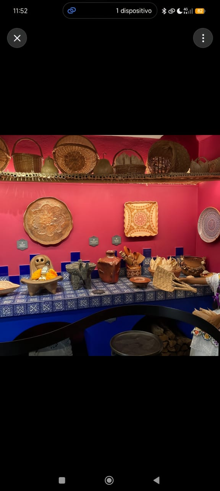

" La nueva forma de apreciar el arte popular mexicano. "

" El museo de arte popular, es un museo privado pero con vocación de servicio público, creado para resguardar y difundir el legado de la Fundación Mamá Viña y Oscar. Su misión es conservar el arte popular mexicano como patrimonio colectivo y poner en valor el patrimonio cultural de los grupos étnicos originarios de Valle de Bravo, principalmente mazahuas y otomíes. No es el MAP de la Ciudad de México, es un recinto más íntimo y comunitario, ubicado en una casa tradicional del centro de Valle. Busca ser un centro de referencia donde se cruzan la historia, la identidad y el paisaje cultural de México. Durante más de 40 años ellos recorrieron todo México comprando directamente a los artesanos, no a intermediarios. Juntaron una colección de más de 3,000 piezas ganadoras de premios nacionales. Antes de morir, decidieron que esa colección no se vendiera ni se quedara guardada en una bodega, sino que se convirtiera en un museo para que la gente de Valle y los turistas entendieran el valor del arte hecho a mano."
El museo está dividido en un recorrido guiado que no es el típico museo con vitrinas aburridas. Es una casa adaptada con patio:
1. Recibidor: Una puerta monumental de madera tallada de más de 3 metros, tallada por un maestro de Puebla, que ganó el Gran Premio Nacional de Arte Popular. Es lo primero que te impacta.
2. Sala de Arte Fantástico: Alebrijes, muñecas de cartonería de Celaya, catrinas, judas y máscaras de diablos de Guerrero. Todo de tamaño real.
3. Sala del Textil: Aquí está lo de Valle. Quexquémetl mazahua bordado a mano, rebozos de Tenancingo, deshilados que tardan 6 meses en hacerse, y piezas hechas con ocoxal, la hoja de pino que recogen las mujeres otomíes.
4. Sala de la Alfarería: La parte más grande. Barro negro de Oaxaca, barro bruñido de Jalisco, árboles de la vida de Metepec, y cerámica de alta temperatura de Valle de Bravo. Te explican 6 técnicas diferentes: bruñido, betus, canelo, esgrafiado, vidriado y policromado.
5. Patio de los Grandes Maestros: Piezas en miniatura que han ganado premios nacionales. Una de las más famosas es una procesión en miniatura de los Voladores de Papantla de solo 15 cm.
Ubicación: Calle Miguel Hidalgo núm. 208, Centro, Valle de Bravo, Estado de México. Horario: miércoles a domingo, de 10:00 a. m. a 6:00 p. m. Entrada: gratuita, según la información disponible.
Por qué es diferente a otros museos - No es grande y eso es su ventaja. Son máximo 4 personas por recorrido, siempre con guía. No hay aglomeraciones. - Te dejan preguntar y tocar algunas réplicas. - Todo lo que ves fue hecho por manos mexicanas y comprado de forma justa. - Es 100% autogestivo. No es del gobierno, vive de donaciones y visitas privadas.
El Museo de Arte Popular Valle de Bravo es un museo comunitario ubicado en Hidalgo 208, en el centro de Valle de Bravo, Estado de México. Es administrado por la Fundación Mama Viña y Oscar y tiene como propósito la conservación, exhibición y difusión del arte popular mexicano como patrimonio colectivo. Su acervo está conformado por piezas creadas por maestros artesanos reconocidos y por objetos vinculados a los grupos étnicos originarios de la región, principalmente mazahua y otomí.
La colección se distribuye en salas que documentan técnicas cerámicas como el brunido, betus, canelo, barro negro esgrafiado, barro natural y policromado, además de alfarería, indumentaria tradicional y obra contemporánea galardonada a nivel nacional. El recinto funciona como centro de referencia del patrimonio cultural del municipio, con vocación de servicio público y con actividades culturales, sociales y educativas para la transmisión del legado artesanal. Opera de miércoles a domingo de 10:00 a 18:00 horas, permanece cerrado lunes y martes, y el acceso general es gratuito mediante reservación previa por grupos.
Un dato interesante es que, a diferencia de la mayoría de museos estatales, este recinto no depende de una institución gubernamental sino de una colección privada familiar que se decidió abrir al público. Gran parte de sus piezas son obras que han ganado el Premio Nacional de Arte Popular y que normalmente estarían dispersas en colecciones particulares o fuera del país. Por esa razón, el museo funciona también como archivo vivo de técnicas en riesgo de desaparecer, ya que documenta el origen, el artesano y el proceso de elaboración de cada pieza, permitiendo que visitantes y nuevas generaciones de artesanos de Valle de Bravo puedan estudiar directamente los métodos tradicionales.